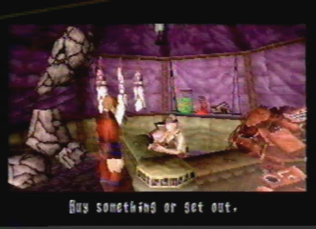

|
Diary Entry 11: Caravan A Stranger Amongst Strangers I had made it to the caravan, just like Gash said. When I first arrived, I ran into a small boy. He thought I was some new hunter he was expecting. I told him who I really was. He said his name was Enkak. He told me his father was a hunter too. Maybe, he was the man I was looking for. I entered a tent to the far right. Therein, I found a mother and daughter. The mother told me to leave them alone. When I just happened to look at her daughter, see screamed at me with all of her might, to leave the girl alone! I quickly ran for the exit! The next tent I entered, happened to be an item shop. I told myself, now I can restock on much needed items. As I approached the man, he told me to buy something or get out! He said there was nothing for my kind here! Man, would it have killed these people to show a shred of hospitality? I wasn't getting anywhere. I wondered if Gash was as trustworthy as he led on to be. Not one person so far, would talk to me and I didn't think anyone would even think about helping me out! There was only one tent left, I sincerely hoped the person in that tent would recognize my pendant. I found myself in a dimly lit room, a man was siting towards the back. As soon as I entered, he recognized my pendant and immediately knew I was a friend of Gash. Thank God! He told me he almost thought I was with a group of thieving bastards that had recently raided the caravan. Now I knew the reason why everyone gave me such a cold welcome! I sat down and the man and I had a long conversation. I told him about Craymen and his men. He replied by saying the group of thieving men had fit my description. The man told me they went north to a place called the Forbidden Zone. It was an area where a gravity storm blows, a place where horrible drooling creatures with razor sharp teeth dwell. Some call it the Death of 1,000 Pieces, he said. I told him no matter the danger, I had to try to get a shot at Craymen. The man wished me luck, and would try to help me out in any way possible. He told the shop owner Biacah to sell me something from his secret stash. Before I exited the tent, he also told me to sell any spare items I had. Doing so, would greatly help the inhabitants of the caravan, since Crayman had taken almost all of their supplies. Night soon fell upon us, the man finally introduced himself, his name was An'jou. His fire lit up the night sky. He told me a story about his people. He said his people were forced out of their homeland by blood thirsty monsters. They had no choice but to search for a new place to call home. The people I had met throughout the day, were all that was left of a once thriving society. After listening to Anjou's stories, I met a man siting towards the back of the caravan, his name was Raul. He was a hunter for hire, taking watch over the surrounding area. He told me the Imperial Force that came to the caravan was probably a special force, directly under the Emperor. When the sun rose, I headed for Biacah's shop to sell my spare items as well as stock up on Elixirs for the coming battles ahead. Before I departed, I ran into that not so nice mother and daughter. The mother apologized for our earlier encounter and said her name was Kou and her daughters name was Fei. Fei didn't say much, but that was okay, she was just shy. It was time to say good-bye, the dragon and I took off for the Death of 1,000 Pieces, the Forbidden Zone! Craymen here I come! |
|
| Divine
Overview |
1. Meet Enkak, the only child living at the caravan. He must be lonely with no friends his age. |
2. Enter the Purple/Green tent to the left. |
 3. You will enter an item shop. The shop owner isn't very kind. He won't allow you to buy anything. |
4. Enter the Yellow/Pink tent to the far right. |
5. You will enter a tent where a mother and daughter live. They think you are nothing but a wandering thief and show no hospitality whatsoever. |
6. Way in the back past the tent you just entered, will be a lone Coolia. It's eating Junio Seeds, not a good food for a Coolia. |
7. Enter the Yellow/Green tent to the right. |
8. Edge finds himself in a mysterious room. |
9. The hunter inside, notices the pendant Gash gave you and agrees to give you some valuable info. |
10. He tells Edge that Craymen took most of the caravan dwellers weapons and medicine. He also says that he went to a place called the Forbidden Zone. |
11. After the conversation, the man builds a fire that lights up the night sky. He introduces himself. His name is An'jou. |
12. Meet Raul, he's out back taking watch duty. He's a hunter for hire. |
13. Right behind Raul, you will find 3 Coolia's snoring the night away! |
14. Walk to the entrance of the caravan, a menu will come up allowing you to leave or make night turn to morning. Choose to wait until the morning. Reenter An'jou's tent, to find two guns positioned on a shelf. If you examine them, you will see that there is an inscription saying "From Mr. Woo" on one of the guns. |
15. An'jou has told everyone that you mean no harm. The inhabitants of the caravan will now show you respect. The snotty mother you met earlier is called Kou and her daughter is called Fei. Head over to the shop owner who calls himself Biacah, and sell all of your expendable items. Just make sure not to sell your healing items. Now once you get some extra Dynes from selling your useless junk, you can stock up on Elixir Minors, Berserk Micros, Free Actions, and Flash Chips. Buy a good amount of each item. |
16. Now that you've stocked up on items, it's time to head out for the Forbidden Zone! |